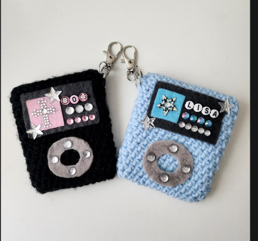
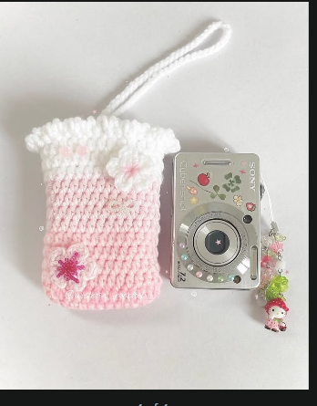
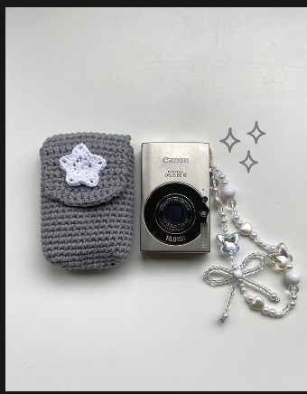
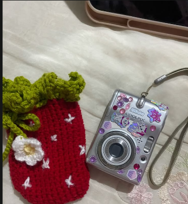

✧ PHOTO THINGS ★ POPULAR
The everyday digicam
For beautifully imperfect photos.
from PKR 15,000
HEY YOU, SLOW DOWN A SEC...
Digicams, old music players, and tiny pieces of yesterday for making right-now feel more like yours.
✿ come have a lookWELCOME! This is Low Tempo: your cheerful, unhurried stop for tested vintage tech. Stay as long as you like. No rush, ever. ☼
For taking pictures, taking the scenic route, and taking your sweet time. Pick a shelf to explore ↓
For beautifully imperfect photos.
For listening all the way through.
For the scenes between the scenes.
Pick a set with its case, charm, and gems already chosen for you.

✧ READY-MADECrochet music-player charms · star accents · blue and silver gems

✧ READY-MADEBlush crochet case · flower charm · pastel gems

✧ READY-MADESlate star case · pearl bow charm · silver gems

✧ READY-MADEStrawberry knit case · flower charm · lilac gems
Choose your device, case, charm, and gems. We’ll put your picks together on a little order ticket.
Digicam · Blush crochet · Flower charm · Lilac gems
A little look at previous custom requests. Start with a favorite and make it your own.
Two crochet colors, initials, stars, and gems.
Blush crochet, a flower, and tiny pastel details.
Some of our favorite photos are blurry. Someone laughed halfway through, the light was fading, and nobody asked for a second take. That’s the feeling behind Low Tempo.
We want old cameras and music players to find a new life in the everyday: a walk with friends, one more song, a day that felt too good to rush. Each piece gets careful checks, honest details, and room for your own little touches.
✳ Take your time; the moment is yours.
A wall for the blurry photos you love most: friends, detours, chai breaks, and ordinary afternoons. Tap a photo to turn it over and read how that day felt.
Choose a photo, then write the feeling you want to remember. Your card joins the wall in this browser.
Say hi, leave us a little thought, or tell us your favourite thing to photograph. Notes stay in this browser.